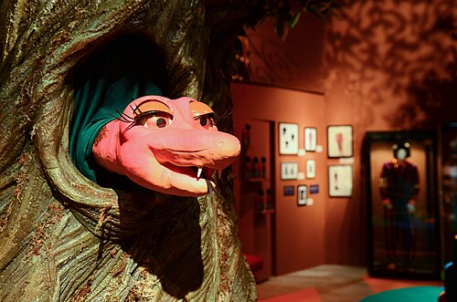
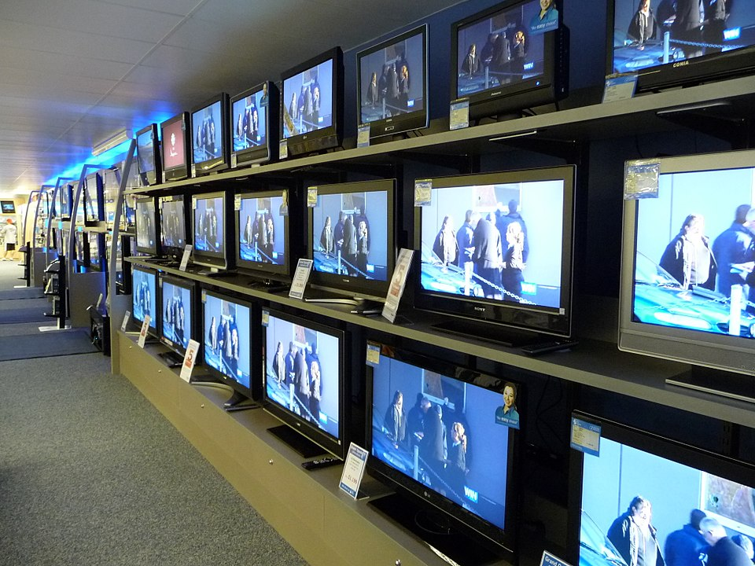

Séries de Televisão
Fonte: Wikipédia
Séries em destaque
Série de televisão
Série de televisão, série televisiva, série de TV, telessérie ou série de streaming é um tipo de Programa televisivo  O programa de televisão é um conjunto de emissões periódicas transmitidas por televisão (eventualmente por rádio) para entreter as pessoas, agrupadas sobre um título ou cabeceira comum, nas que a modo de bloco se inclui a maior parte dos conteúdos audiovisuais que se oferecem numa estação ou network. é um conjunto de emissões periódicas transmitidas por TV para entreter as pessoas. ou programa online com um número pré-definido de capítulos por temporada, chamados episódios. Genealogicamente, a série televisiva deriva, por um lado, dos seriados cinematográficos (ou filmes em série), formato inventado pouco antes da primeira Primeira Guerra Mundial e, por outro, dos folhetins então publicados na imprensa, além do drama radiofônico. O seriado era originalmente concebido como um filme, roteirizado para ser dividido em episódios e exibido nos cinemas. Esses episódios eram lançados semanalmente.
Formato
Uma série de
televisão

Televisão (TV) é um meio de telecomunicações para
transmissão de imagens em movimento e som.
pode ser ficcional ou documental, possui um número preestabelecido de
episódios por temporada. O modelo padrão estadunidense é de cerca de 13 capítulos por
temporada, que iniciam num mesmo período todo ano: o outono (primavera, no hemisfério Sul)
para grandes estreias, e o midseason, para estreias menores. Se a temporada agrada o espectador e
traz retorno de audiência para a emissora de TV, é contratada uma nova temporada e são feitas
pequenas alterações na trama a fim de melhorar a aceitação e manter o espectador interessado. Essas
mudanças, contudo, nunca são profundas. Se uma temporada não agrada o espectador ou os donos da
emissora, assim como a novela, a série é cancelada, muitas vezes sob o protesto dos fãs.
Diferente do formato adotado pelas novelas brasileiras ou portuguesas em que terminada a exibição,
não há renovação de temporada independente de seu sucesso, uma série pode durar muitos anos, com
casos como Law & Order (Lei & Ordem), no ar desde 1990, que de tanto sucesso gerou três outras
séries: Law & Order: Special Victims Unit, Law & Order: Criminal Intent e Law & Order Trial by
Jury.
E como define David França Mendes, roteirista e professor de roteiro Pois o que faz de uma série
uma série, entre outras coisas, é ser um organismo, uma máquina geradora de histórias
.
No Brasil
No Brasil, as séries foram amplamente produzidas desde a criação da TV, até 1963, quando as telenovelas passaram a ser diárias. Exemplos dessa fase são: Alô, Doçura, com Eva Wilma e John Herbert, maior êxito desta fase, inspirado no americano I Love Lucy. Outros sucessos da época são Vigilante Rodoviário na Tupi e Capitão 7 na Record. Apesar de a Rede Globo produzir seriados comoA Grande Família, Ciranda, cirandinha e o Caso Especial, uma espécie de teleteatro, as séries só ganhariam força com a extinção da "novela das 22h", onde, depois da reexibição de Gabriela, o horário foi ocupado por séries como Malu Mulher, Carga Pesada e Plantão de Polícia. Depois desta fase, mais e mais seriados foram produzidos, e outras emissoras também aderiram. Outras séries brasileiras de sucesso foram Armação Ilimitada, Sai de Baixo, Os Normais, Sob Nova Direção, Toma Lá Dá Cá, A Diarista e a nova versão de A Grande Família. A RecordTV, todavia, costuma exibir mais desse formato, desde a criação do novo núcleo de teledramaturgia em 2004, séries policiais como A Lei e o Crime, Fora de Controle, e também de outras temáticas como a política Plano Alto, e a dramática Conselho Tutelar garantem audiência mediana para a emissora, a maioria com médias de 6 pontos, ficando sempre atrás da Rede Globo e do SBT. Destacam-se os grandes investimentos em superproduções, como A História de Ester, Rei Davi, José do Egito, Milagres de Jesus e Reis. Outros canais, como SBT,Band, RedeTV!, TV Cultura e Canal Futura, já produziram séries esporadicamente.